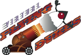

Contests@JavaOne
Just in case you think you're going to be bored at JavaOne, we seem to be awash in contests. The Virtual Flying Dukes contest is all about game programming with the jMonkeyEngine 3D rendering engine. It looks like the GreenFoot folks will be running a contest. And the realtime crew had such fun with last year's slot car racing demo that they're doing a similar one again: the control problem is noticably tougher this time. And that's just the start of the list...We're going through the last round of demo reviews on Wednesday. It's really going to be tough this year: there's a very strong collection of proposals. It's never been so hard to choose. I keep expecting it to get easier, but no luck. There's a particularly strong showing of desktop GUI and weird device demos. One of my favorite demos this year has to be somewhat constrained because of risk of decapitation. If you want to know what I mean by that, you'll just have to come to JavaOne.
| April 16, 2007 |